Entropic Flow Policy (EFP) replaces the reward function with a single quantity — the log-count of trajectories still reachable to the goal — and trains a policy to make that number shrink at every step. Paired with a diffusion-style action sampler, imitation learning becomes a contraction problem instead of an action-mimicry problem.
Most imitation learning either copies actions directly (behavior cloning) or infers a reward and optimizes it (inverse RL). EFP does neither. It defines goal-reachability entropy: from a state s, how many distinct trajectories of length ≤ H still reach the goal sg? Far from the goal, many paths remain viable — entropy is high. Near the goal, the funnel narrows — entropy collapses toward zero. A policy that always moves toward lower entropy is, by construction, moving toward the goal.
Demonstrations are treated as an empirical trace of that funnel, not as actions to imitate. That distinction gives EFP a self-correcting property plain behavior cloning lacks: if the agent drifts off the demonstrated path, the entropy gradient still points back toward the funnel, because entropy is defined over the whole state space, not just the states a demo happened to visit.
| Aspect | Standard RL | MaxEnt RL | EFP (this work) |
|---|---|---|---|
| Entropy's role | not used | maximize policy entropy | minimize reachability entropy |
| Reward signal | extrinsic | extrinsic + entropy bonus | entropy is the signal |
| Core quantity | V(s) | V_soft(s) | H(s, s_g) = log-reachability |
| Diffusion connection | none | none | state entropy sets the sampler's noise level |
Diffusion policies already contract entropy — in action space, across denoising steps. EFP contracts entropy in state space, across real timesteps. Entropic Flow Policy links the two: the current state entropy sets the noise scale for the action sampler — broad, exploratory noise far from the goal; tight, precise noise near it — and the denoising score is nudged by −∇aHθ at every step.
There is no reward model anywhere in this pipeline — every stage is supervised either by the demonstrations' own timestamps or by the dynamics the policy induces.
| # | Stage | What it's trained on |
|---|---|---|
| 1 | Label entropy from demo ordering | Hlabel(st) = log(steps-remaining-to-goal + 1) — a free label from timestamps alone |
| 2 | Train the entropy estimator Hθ(s, sg) | ranking loss (later states score lower than earlier ones) + anchor loss (H(sg,sg)=0) + soft regression to the label |
| 3 | Train a dynamics model fφ(s, a) → s′ | plain MSE — needed so ∇aH can be computed by differentiating through the predicted next state |
| 4 | Train a DDPM score network εψ | standard diffusion-policy noise-prediction objective on expert actions |
| 5 | Sample actions at inference | denoise as usual, but steer every step by −∇aHθ(f(s,a), sg), with the initial noise scale set by the current H — broad far from goal, tight near it |
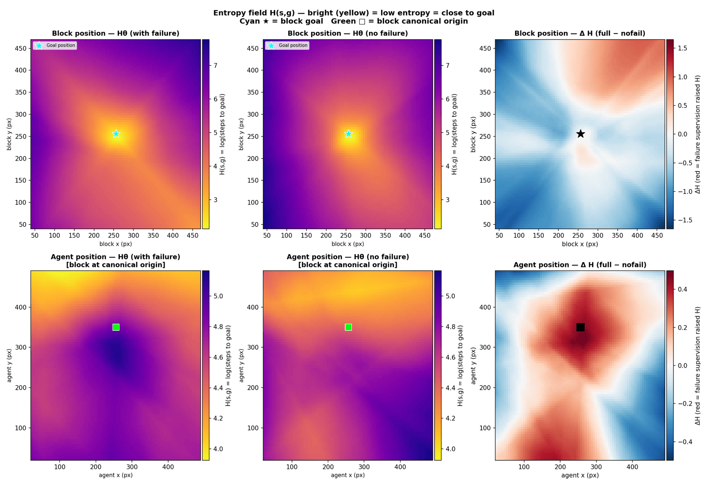
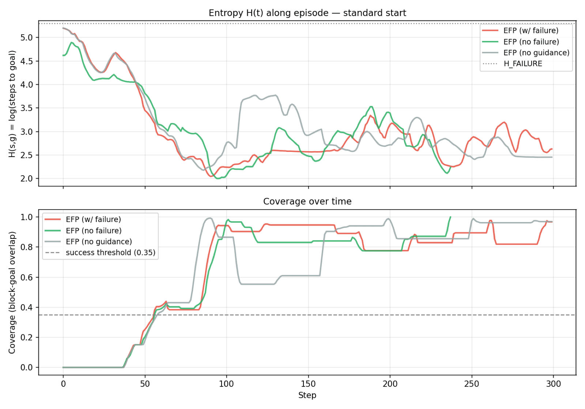
Each experiment exists because the previous one wasn't hard enough to separate EFP from behavior cloning. The task design itself is a finding.
A redundant 3-DoF arm reaching for 10 targets, 200 demos. Each target has a single unambiguous solution — no real multimodality, so this is a sanity check that entropy contraction works at all before asking it to out-perform anything.
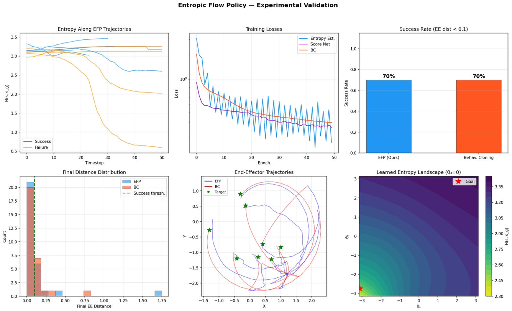
A point mass must get from a start region to a goal star past two rectangular blocks. First pass: the blocks leave a narrow center gap, so upper/lower/middle are all technically viable — 291 demos.
BC 100% vs. EFP 72% — BC's mode-average sneaks straight through the gap, so the task didn't punish averaging. EFP led only under perturbation (93% vs. 80% for a mixture-density baseline).
Closing the gap entirely forces a genuine binary choice — strictly upper or strictly lower, nothing in between. If the "BC averages two modes into a useless path" story were the whole explanation, EFP should win here. It doesn't: BC 100% vs. EFP 56% on the in-distribution, closed-gap variant — a real neural net doesn't literally output the arithmetic mean of two modes, so plain BC still commits to one path and wins. This is why Push-T (Exp. 3) exists: it needed a task where averaging two valid solutions produces something that isn't just "a slightly worse path" but a physically ineffective one.
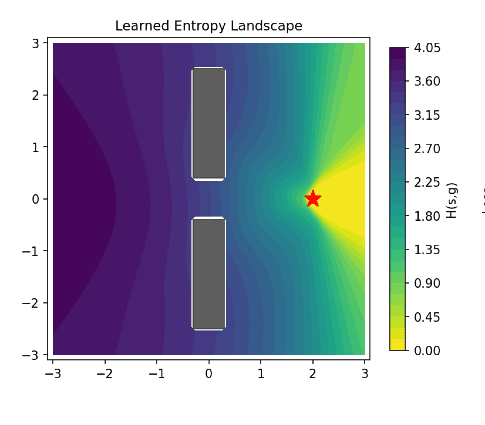
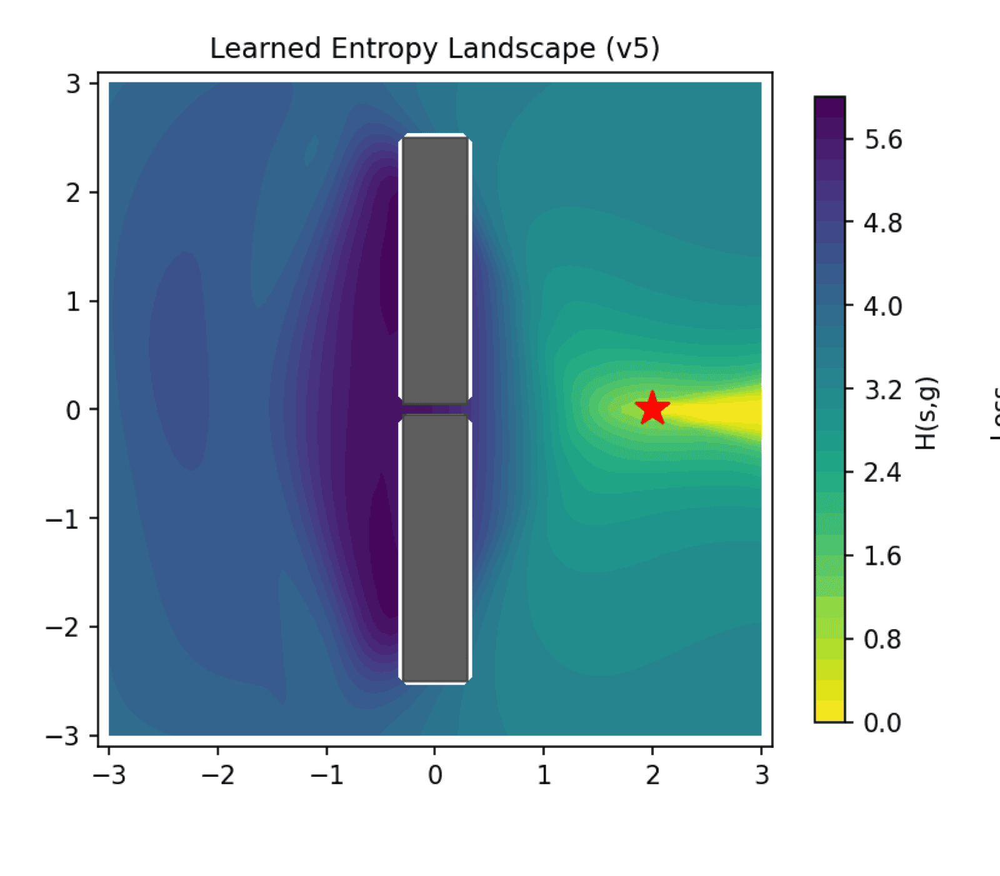
Five task-design passes on the same road-block environment, in order. BC/MDN-BC beat EFP in every one except the open-gap perturbation case.
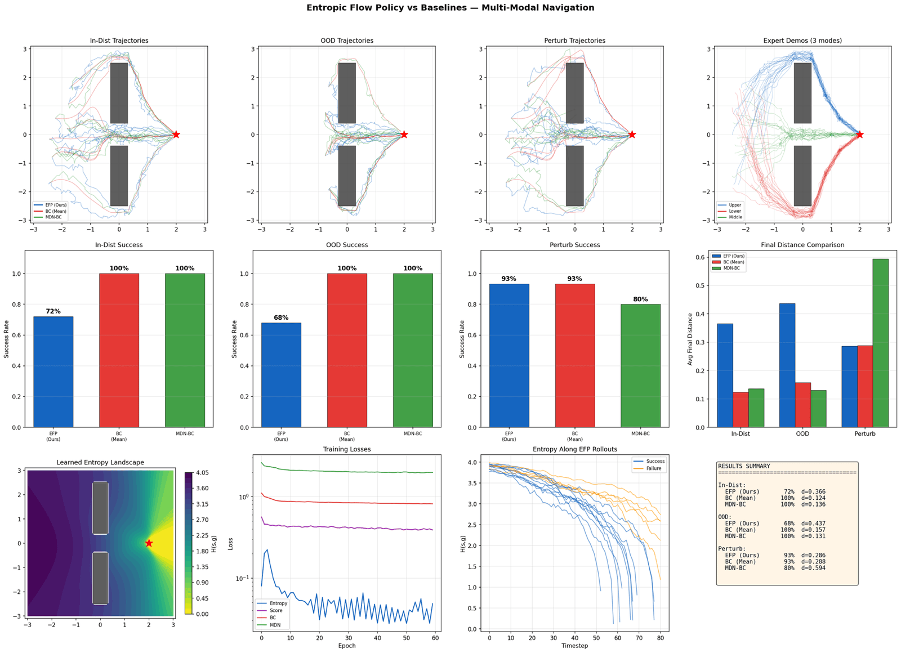
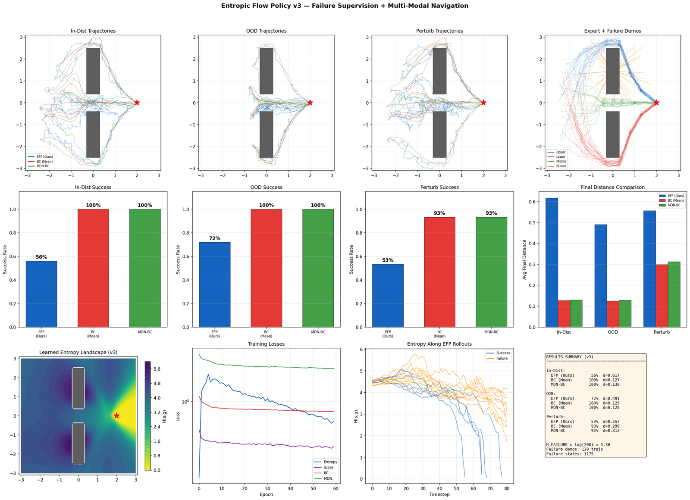
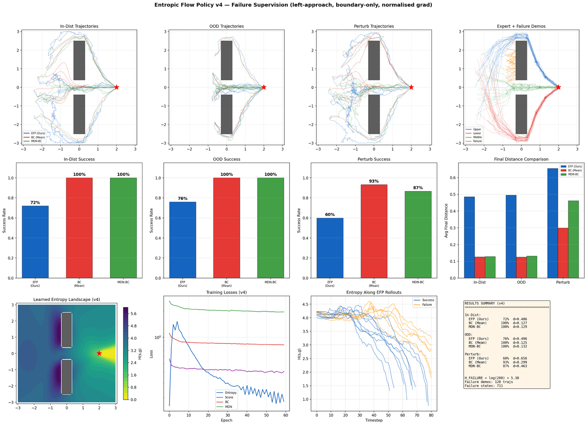
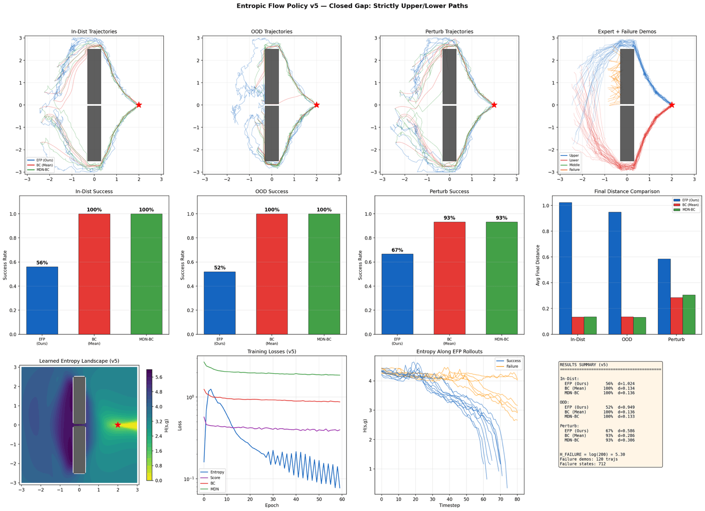
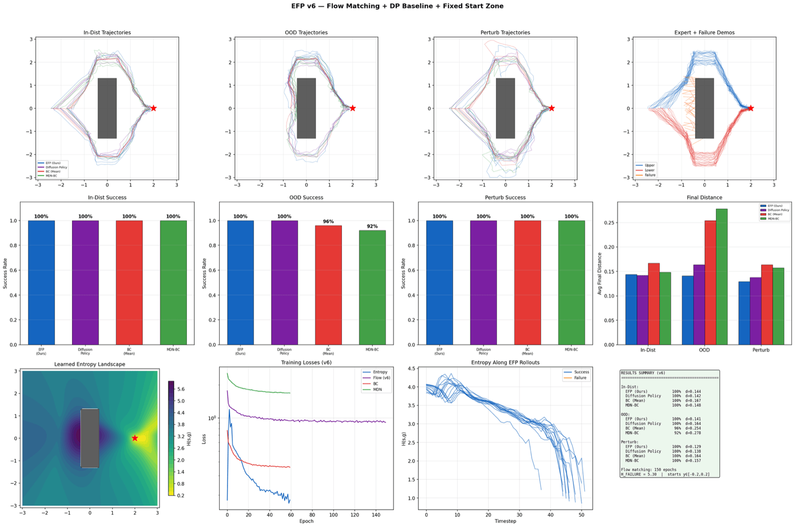
Push a T-block into a target pose. No gap to sneak through: averaging two valid pushes produces a push that works for neither.
EFP + failure demos wins outright — the headline result below.
Two conditions were tested: Standard (agent starts in a normal position) and Perturb (agent starts directly above the block — the setup that, without correction, drives the block away from the goal). EFP was trained two ways: with a small set of labeled failure trajectories added to its entropy estimator, and without.
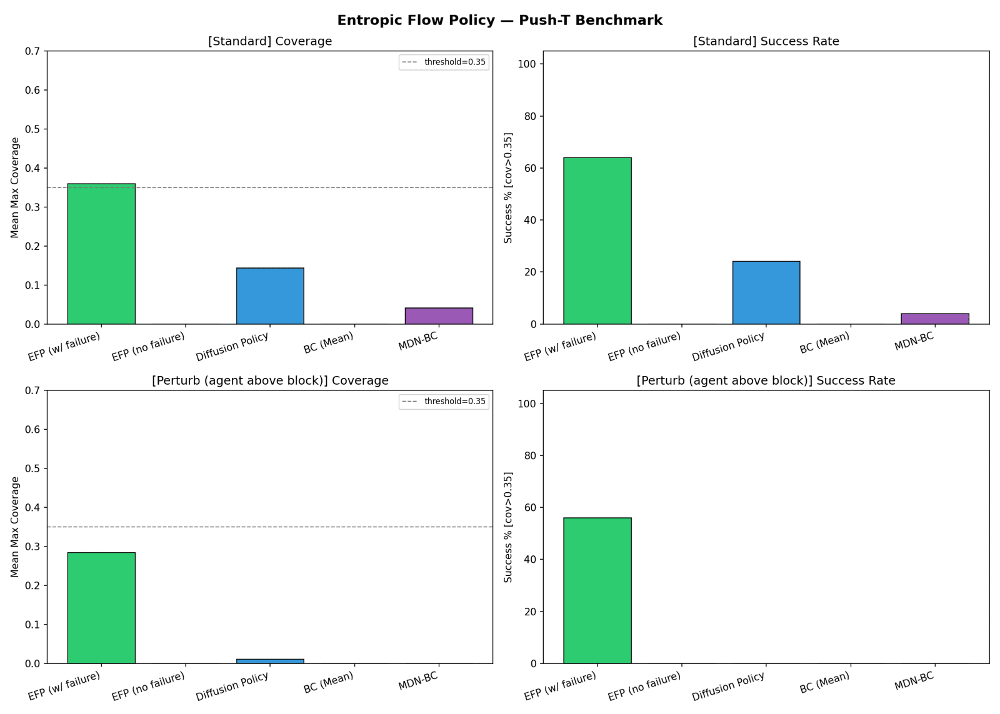
Without them, EFP's entropy gradient has never seen what "getting worse" looks like, so under perturbation it has no signal to correct course, and its guidance term actively fights the diffusion prior. Coverage collapses to 0.000 in both conditions, worse than plain Diffusion Policy's 0.143 / 0.010.
Add failure trajectories, and the same architecture becomes the only method that survives the adversarial start: 64% / 56% success, 0.359 / 0.285 coverage, versus ≤24% / 0% for every baseline.
A separate ablation applies entropy guidance on top of plain BC (rather than a diffusion sampler) and sweeps the guidance scale from 0.05 to 5.0.
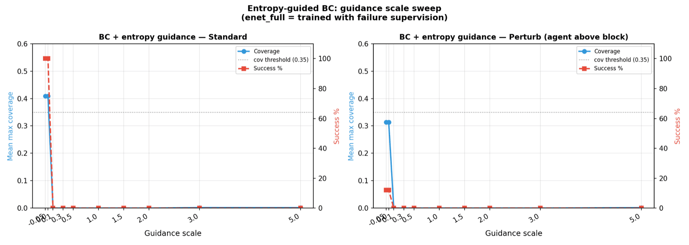
Everything above uses a hand-scripted synthetic expert. Re-running the same comparison on the official Push-T dataset (206 human-teleoperated episodes) tells a different story:
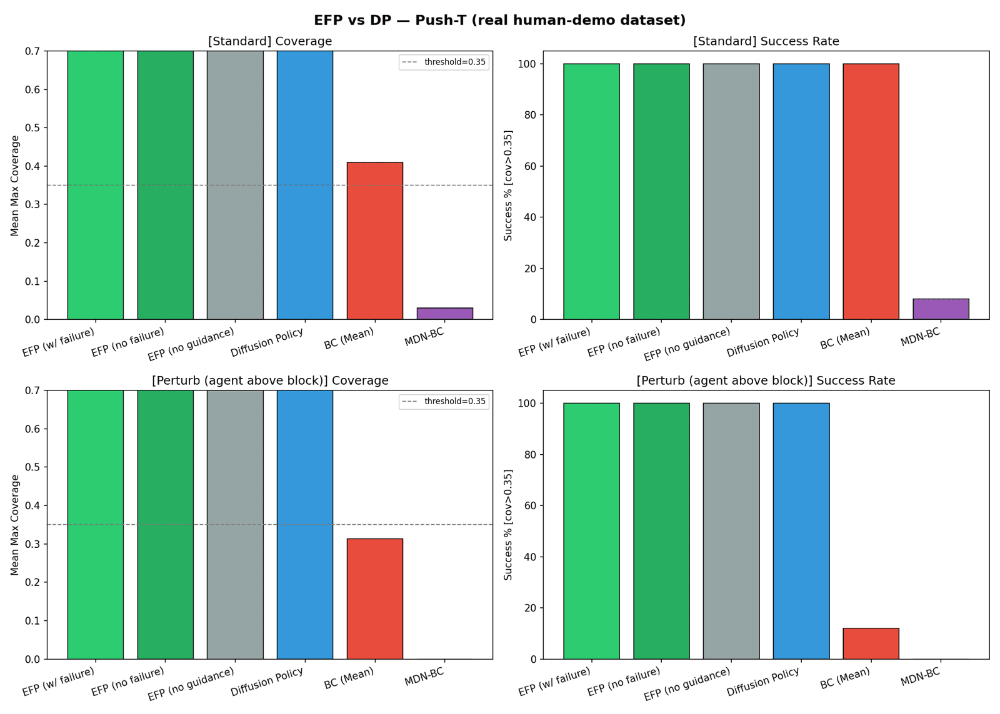
Failure supervision's advantage on synthetic Push-T exists because the hand-scripted expert gave plain Diffusion Policy a narrow, brittle demonstration set to imitate — DP only scored 24%/0% there. Human demonstrations are naturally more diverse, and standard Diffusion Policy trained on them is already robust to the adversarial start, without any entropy guidance at all. The failure-supervision finding is real, but it's a finding about compensating for weak demonstrations, not a universal improvement over Diffusion Policy.
A related, code-independent project applies the same entropy-contraction thesis to the denoising process itself — see Heat Dissipation Policy.